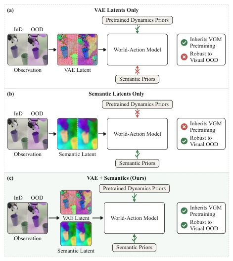
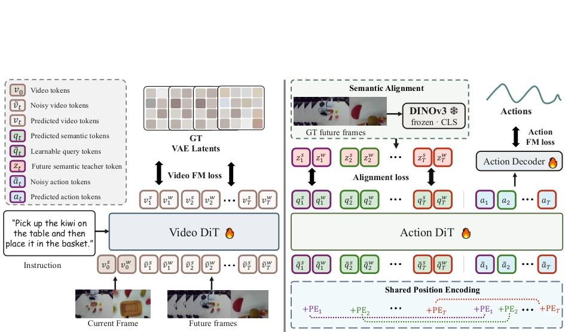
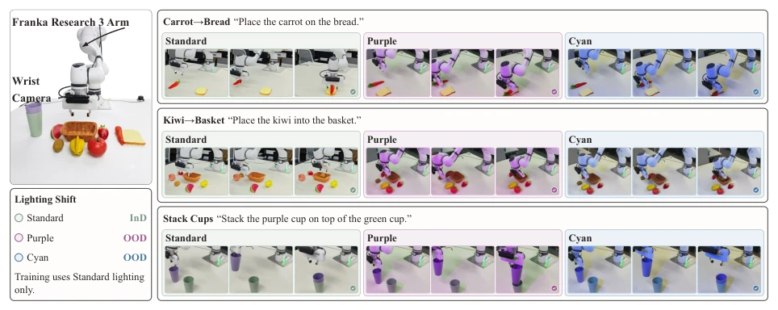

这篇论文试图解决 WAM 领域的“既要又要”难题：既要 VAE 预训练带来的强大动力学先验，又要语义空间的视觉鲁棒性。作者没搞大动干戈的重新预训练，而是搞了个“缝合怪”式的后训练技巧。核心思路是在动作流里塞入可学习查询 token，强行对齐未来帧的 DINOv3 语义特征。这招确实灵，在 OOD 测试下成功率蹭蹭涨，但代价是推理时还得留着这些 query token，虽然不用 DINO 老师了，但模型结构毕竟多了点负担。最大的槽点是，这本质上还是靠外部特征监督来“矫正”VAE 的视觉偏差，如果 DINO 本身对某些极端光照也失效，这方法估计也得歇菜。不过对于不想重训大模型的团队来说，这确实是个性价比不错的“补丁”，特别是考虑到它不需要修改原有的 Video DiT 架构，属于典型的“动刀小、收益大”策略。
This paper attempts to solve the 'have it both ways' dilemma in the WAM field: needing both the powerful dynamics priors brought by VAE pretraining and the visual robustness of the semantic space. The authors did not undertake a major re-pretraining, but instead devised a 'patchwork-style' post-training technique. The core idea is to inject learnable query tokens into the action stream, forcibly aligning with the DINOv3 semantic features of future frames. This trick indeed works, with success rates skyrocketing under OOD testing, but the cost is that these query tokens must still be retained during inference; although the DINO teacher is no longer used, the model structure does bear a bit more burden. The biggest drawback is that this essentially relies on external feature supervision to 'correct' the VAE's visual bias; if DINO itself fails under certain extreme lighting conditions, this method is estimated to fail as well. However, for teams unwilling to retrain large models, this is indeed a cost-effective 'patch', especially considering it does not require modifying the original Video DiT architecture, belonging to a typical 'small cut, big gain' strategy.
研究动机Motivation
现有 WAM 主要分两派。一派基于 VAE 隐空间（如 FastWAM, GE-Act），继承了 Web 规模视频生成模型（VGM）的动力学先验，但 VAE 优化的是像素重建，导致动作预测对光照、纹理变化极其敏感（Fei et al., 2026; Zhang et al., 2026）。另一派基于语义隐空间（如 LDA-1B, V-JEPA），对视觉扰动鲁棒，但无法利用 VGM 的预训练知识，需要昂贵的大规模重预训练（Assran et al., 2025）。这导致 WAM 面临根本性权衡：要么鲁棒性差，要么先验弱。Robust-WAM 旨在打破这种零和博弈，保留 VAE 路径的同时注入语义先验。之前的工作如 FLARE 或 FRAPPE 虽然做了未来表示对齐，但多用于独立策略而非预训练 WAM，且未显式耦合未来查询与动作步。本文填补了这一空白，试图在保留大规模预训练优势的前提下，通过轻量级对齐提升泛化能力。
Existing WAMs are mainly divided into two camps. One camp is based on VAE latent space (e.g., FastWAM, GE-Act), inheriting the dynamics priors of Web-scale video generation models (VGM), but VAE optimizes pixel reconstruction, causing action prediction to be extremely sensitive to lighting and texture changes (Fei et al., 2026; Zhang et al., 2026). The other camp is based on semantic latent space (e.g., LDA-1B, V-JEPA), robust to visual perturbations, but cannot utilize VGM pretraining knowledge, requiring expensive large-scale re-pretraining (Assran et al., 2025). This leads WAM to face a fundamental trade-off: either poor robustness or weak priors. Robust-WAM aims to break this zero-sum game, injecting semantic priors while retaining the VAE path. Previous work such as FLARE or FRAPPE, although performing future representation alignment, is mostly used for independent policies rather than pretraining WAM, and does not explicitly couple future queries with action steps. This paper fills this gap, attempting to improve generalization capabilities through lightweight alignment while retaining the advantages of large-scale pretraining.

Figure 1 (a) VAE-latent WAMs inherit the dynamics priors of large-scale VGM pretraining, but their latents move with appearance and the policy breaks under visual shifts. (b) Semantic-latent world models are robust to visual shifts, but cannot leverage the pretrained dynamics priors. (c) Our Robust-WAM keeps the VAE generative path and injects semantic priors into the action stream, obtaining both.
The overall process is post-training based on existing WAM. Retain the Video DiT VAE denoising path to ensure dynamics priors are not lost. Innovations are mainly in the Action DiT branch: 1. Introduce Learnable Query Tokens, one corresponding to each future timestep and viewpoint, concatenated to the front of the action token sequence. 2. Semantic Alignment Target: Use frozen DINOv3 CLS embedding as semantic supervision for future frames, which summarizes scene content and is insensitive to texture and lighting. 3. Temporal Alignment: Query tokens reuse the position encoding (PE) of corresponding action steps, clarifying the correspondence of future timesteps. 4. Loss Function: Calculate cosine similarity loss between query output and DINOv3 target. During inference, remove DINOv3 teacher and network head, only retaining query tokens to participate in forward propagation, achieving plug-and-play. This method avoids retraining the entire VAE space, but directly corrects appearance bias at the action representation layer, making action generation conditioned on features ignoring texture and lighting, thus remaining stable under visual changes. Specifically, query tokens read action plans and video streams via WAM's existing attention mechanism, while action tokens can also read the future semantics carried by queries; this bidirectional interaction ensures action planning is based on appearance-invariant features.

Figure 2 Overview of Robust-WAM. (a) We inherit the video branch of the original WAM as it is. The Video DiT keeps denoising the VAE latents of the future frames under its own flow-matching loss, so the large-scale VAE-space pretraining is retained. (b) The upper part is the semantic alignment. For each future step and camera view we prepend a learnable query token to the noised action tokens, and after the Action DiT processes the whole sequence we align the output of each query with the frozen DINOv3 CLS embedding of the corresponding ground-truth future frame, which is an appearance-invariant summary of the scene content. The lower part is the shared positional encoding (PE). Each query reuses the positional encoding of the action tokens at the step it describes, which tells the model h
Tested on two OOD benchmarks: RoboTwin clean→random and LIBERO-Plus. Baselines include VLA (e.g., OpenVLA) and WAM (e.g., FastWAM, GE-Act, LDA-1B). Metric is task success rate. Results show Robust-WAM significantly improves OOD success rate while maintaining InD performance. For example, GE-Act improved by 2.9 points on LIBERO-Plus, FastWAM by 9.2 points. Real robot experiments (Franka) under lighting changes, OOD success rate improved from 57.3% to 80.0%. Ablation studies show DINOv3 CLS is superior to Patch or depth features, and temporal position encoding is crucial. Additionally, improvements were observed on seven perturbation axes in LIBERO-Plus (camera, lighting, layout, etc.), proving semantic targets not only counter photometric changes but also benefit from geometric and viewpoint changes. Compared with LDA-1B, proving the importance of large-scale video generation pretraining, semantic representation should serve as augmentation rather than replacement.

Figure 3 Real-world tasks under illumination shifts. Three tabletop manipulation tasks on a Franka Research 3 arm observed by a fixed third-person camera and a wrist camera. We train under standard illumination and evaluate under two unseen illumination conditions, purple and cyan.